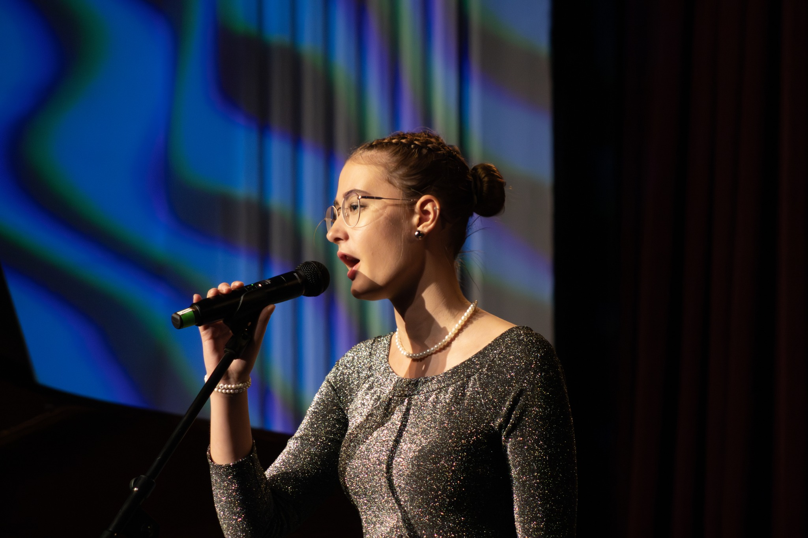
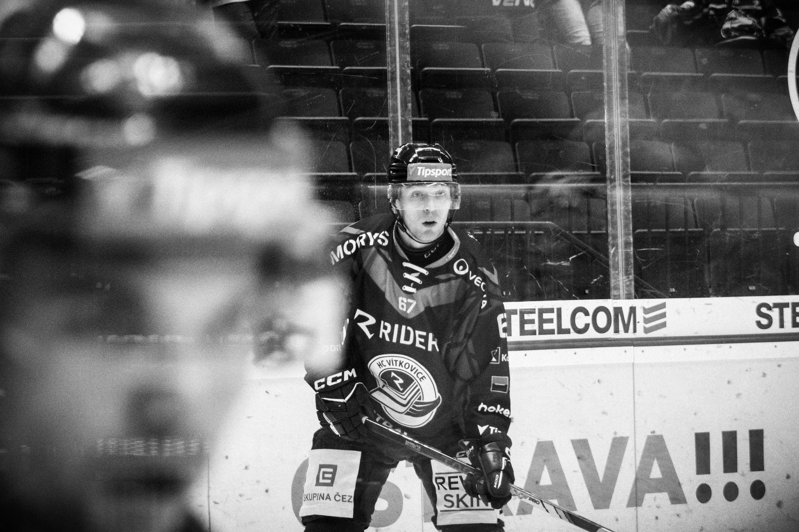

Projekty v rámci fotografie
Nahlédněte pod pokličku mých projektů v rámci fotografie.
Focení pro ZUŠ Ostrava-Zábřeh
Dostal jsem možnost být hlavním fotografem pro úspěšnou Základní uměleckou školu v Ostravě-Zábřehu, kde jsem fotografoval studenty v rámci jejich velkých koncertů, ale i menších předehrávek.
Z důvodu, že se jednalo o focení dětí pro školu, nemám bohužel možnost ukázat svojí práci na soukromé platformě, veškeré fotografie z toho projektu si tak můžete zobrazit na odkazu níže.


Focení pro HC Vítkovice ridera
Díky působení v rámci školního projektu jsem dostal možnost vyzkoušet si fotografii v rámci sportovního utkání české hokejové extraligy, který se odehrál mezi HC Vítkovice Ridera proti HC Verva Litvínov
Můj hlavní cíl bych zachytit emoce důležitého sportovního utkání a víc se soustředit na "vibe" než čistě na zachycení sportovního výsledku.

